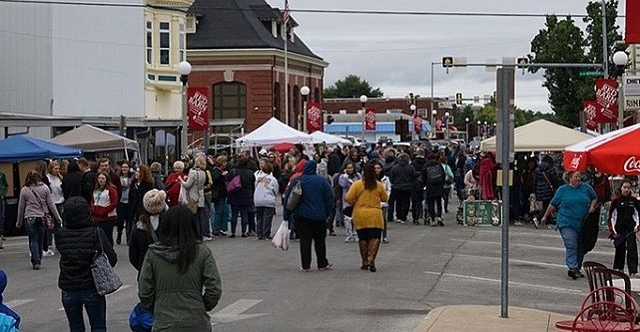

About
Gallery
Blog
Contact

Blog
Search by Title:
Quilting Workshop
KHS/KAA Student Exhibit
Clara Straight Tetrospective Exhibit
Summer on the Square
Friends of the Gallery Fundraiser
Red Barn Applications
Quilt Piecing Workshop
Steel Magnolias
Murder Mystery Dinner
North Missouri Fiber Artists